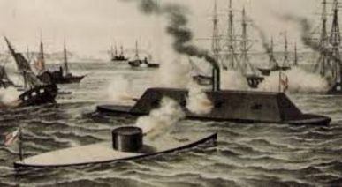
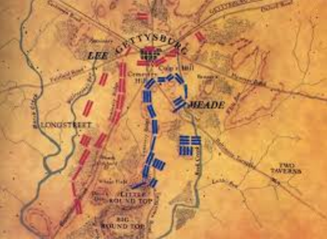

Civil War Tactics
Ever wondered what military tactics were used during the Civil War? From barricading river mouths, to the actual tactics used during the battle, strategic thinking and military tactics are what won the war!
Basic Tactics
-
During the Civil War soldiers used matchlocks, which were a type of gun that used a lock and a piece of cord to ignite powder, then fell back to reload.
 Artillery was placed in the back of the army to fire over the infantry.
Artillery was placed in the back of the army to fire over the infantry.
 Lots of battles began with a cavalry charge.
Lots of battles began with a cavalry charge.
During a cavalry charge, gunners took shelter behind pikemen. (Carried 12-18 feet long pikes.)
An army unfortunately had to fight in the open and close together because it would have gotten too smoky in a forest, and the generals could not tell the troops what to do.
Special Tactics
Lincoln took control of all the telegraphs so nobody could spy on them and send information.
Before the war Abraham Lincoln barricaded all Southern ports so the South could not get any outside help.
The "Pennsylvania Boys" dug a mine shaft under a confederate fort protecting Petersburg and blew it up.
William T. Sherman sabotaged the South by taking food, burning buildings, and freeing slaves in Atlanta. (A southern town)

After the clash of the Ironclads, the North and the South started building more Ironclads.
During the war the North was trying to capture forts on the Mississippi River.
A Strategic Battle
Gettysburg
Day 2 of the Battle of Gettysburg
The entire battle lasted three days.It was considered by some as the most important engagement during the Civil War.
During the second day, the Union forces made a fishhook like position so they could easily reinfore any place that was in trouble.
The hill Little Round Top protected the Union's left flank and if they lost it, they would have been surrounded.
Union soldiers arrived at Little Round Top just before the Confederate soliders did.